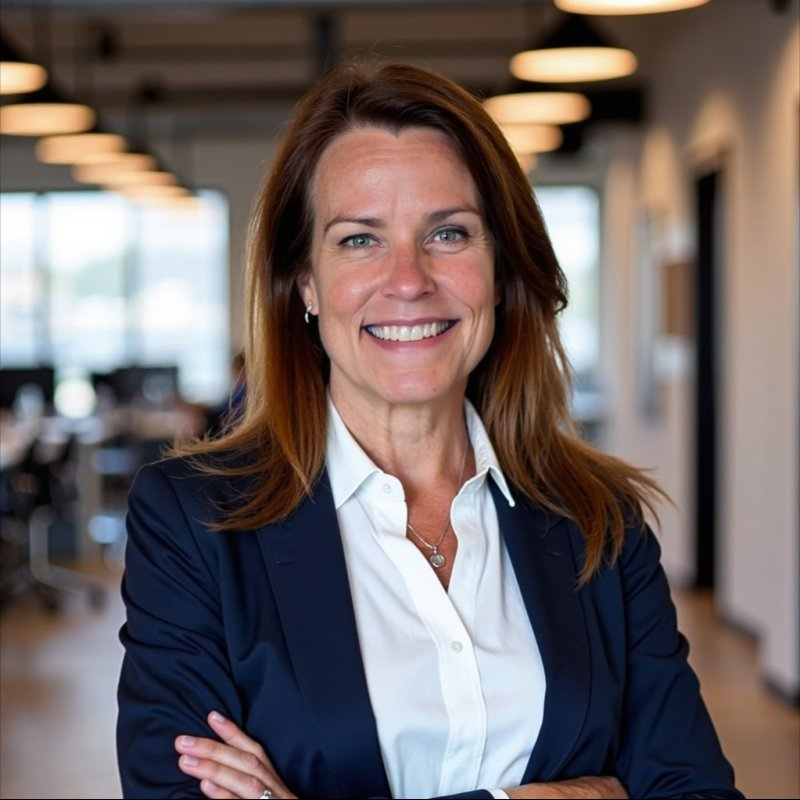

MindScapes connects the systems most organizations build in silos — infrastructure, workforce, and AI — into one architecture for digital transformation.
Most bold ideas don't fail for lack of ambition — they fracture across silos. MindScapes connects what others keep separate.
See what others can't. Spot the layers, signals, and convergences that turn isolated technology investments into integrated systems.
Bring the right people together. Build the public-private partnerships, channel networks, and coalitions that make the work executable.
Turn vision into delivery. Translate emerging technology, policy, and R&D into programs that run — with the workforce trained to sustain them.
A consistent pattern: identify what's coming next, connect the right people, deliver the systems that scale.
Spent years facilitating the relationships that brought Kansas its first Internet Exchange Point — now a national blueprint for AI-ready interconnection. The State of Kansas awarded a $5M matching grant to IXP.US to build and operate the IXP as a WSU Innovation Campus Partner.
Co-founded and led the build of a CLIA-certified lab from the ground up in 90 days — delivering 350,000 COVID-19 test results. Kept 600+ businesses and 400+ schools across Kansas operational through the pandemic.
Wichita sits at the center of a region that manufactures aircraft, grows food for the world, and is now building the data center and fiber infrastructure that will power the next economy.
MindScapes operates nationally — but the heartland isn't just where we're from. It's proof of concept. If you can build integrated infrastructure-to-AI systems in the middle of America, you can build them anywhere.
We're part of a growing national conversation that includes the Rockefeller Foundation's Big Bets for America and Heartland Forward — making the case that the future of American innovation is being built in the middle of the country.
The future of American innovation is being built in the middle of the country.
The Heartland Thesis
Innovator · Strategist · Connector
A 30-year connector across infrastructure, workforce, and AI. Featured speaker at the Rockefeller Foundation's Big Bets for America. Has testified before the White House Domestic Policy Council and the Kansas State Legislature.
Meet Tonya & the work →Whether you're building AI-ready workforce pipelines, deploying infrastructure, or trying to connect the two — start with a conversation.
Request a Brief